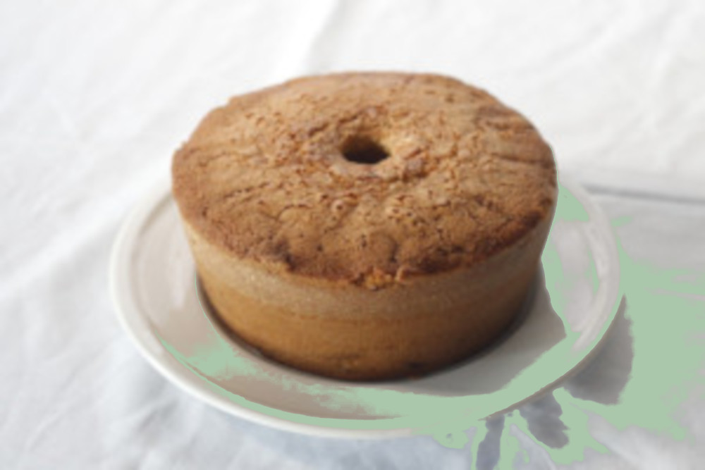

O que vamos precisa
- 4 ovos
- 200g de manteiga (4 colheres cheia)
- 3 xicara de trigo
- 1 xicara de leite
- 1 colher de sopa de fermento
Modo de preparo
- Bater os ovos, o açucar e a manteiga até formar um creme homogeneo.
- Depois junte o trigo o leite, barta bem, por último o fermento.
- Assar em forma untada.